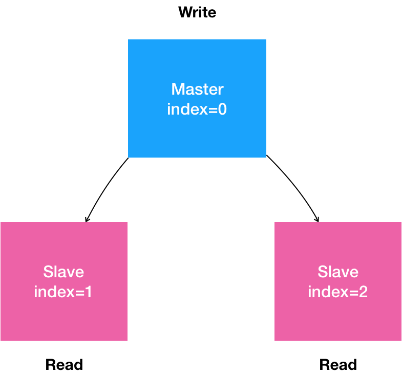
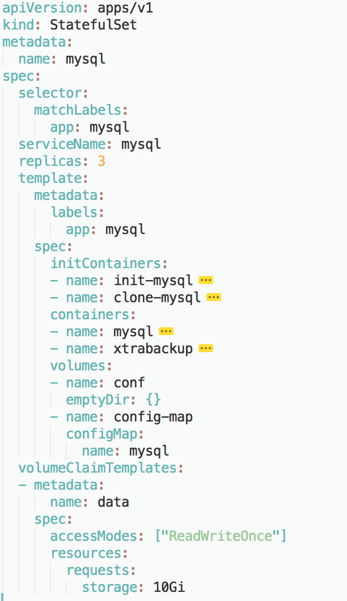

- 00 开篇词 打通“容器技术”的任督二脉.md.html
- 01 预习篇 · 小鲸鱼大事记（一）：初出茅庐.md.html
- 02 预习篇 · 小鲸鱼大事记（二）：崭露头角.md.html
- 03 预习篇 · 小鲸鱼大事记（三）：群雄并起.md.html
- 04 预习篇 · 小鲸鱼大事记（四）：尘埃落定.md.html
- 05 白话容器基础（一）：从进程说开去.md.html
- 06 白话容器基础（二）：隔离与限制.md.html
- 07 白话容器基础（三）：深入理解容器镜像.md.html
- 08 白话容器基础（四）：重新认识Docker容器.md.html
- 09 从容器到容器云：谈谈Kubernetes的本质.md.html
- 10 Kubernetes一键部署利器：kubeadm.md.html
- 11 从0到1：搭建一个完整的Kubernetes集群.md.html
- 12 牛刀小试：我的第一个容器化应用.md.html
- 13 为什么我们需要Pod？.md.html
- 14 深入解析Pod对象（一）：基本概念.md.html
- 15 深入解析Pod对象（二）：使用进阶.md.html
- 16 编排其实很简单：谈谈“控制器”模型.md.html
- 17 经典PaaS的记忆：作业副本与水平扩展.md.html
- 18 深入理解StatefulSet（一）：拓扑状态.md.html
- 19 深入理解StatefulSet（二）：存储状态.md.html
- 20 深入理解StatefulSet（三）：有状态应用实践.md.html
- 21 容器化守护进程的意义：DaemonSet.md.html
- 22 撬动离线业务：Job与CronJob.md.html
- 23 声明式API与Kubernetes编程范式.md.html
- 24 深入解析声明式API（一）：API对象的奥秘.md.html
- 25 深入解析声明式API（二）：编写自定义控制器.md.html
- 26 基于角色的权限控制：RBAC.md.html
- 27 聪明的微创新：Operator工作原理解读.md.html
- 28 PV、PVC、StorageClass，这些到底在说啥？.md.html
- 29 PV、PVC体系是不是多此一举？从本地持久化卷谈起.md.html
- 30 编写自己的存储插件：FlexVolume与CSI.md.html
- 31 容器存储实践：CSI插件编写指南.md.html
- 32 浅谈容器网络.md.html
- 33 深入解析容器跨主机网络.md.html
- 34 Kubernetes网络模型与CNI网络插件.md.html
- 35 解读Kubernetes三层网络方案.md.html
- 36 为什么说Kubernetes只有soft multi-tenancy？.md.html
- 37 找到容器不容易：Service、DNS与服务发现.md.html
- 38 从外界连通Service与Service调试“三板斧”.md.html
- 39 谈谈Service与Ingress.md.html
- 40 Kubernetes的资源模型与资源管理.md.html
- 41 十字路口上的Kubernetes默认调度器.md.html
- 42 Kubernetes默认调度器调度策略解析.md.html
- 43 Kubernetes默认调度器的优先级与抢占机制.md.html
- 44 Kubernetes GPU管理与Device Plugin机制.md.html
- 45 幕后英雄：SIG-Node与CRI.md.html
- 46 解读 CRI 与 容器运行时.md.html
- 47 绝不仅仅是安全：Kata Containers 与 gVisor.md.html
- 48 Prometheus、Metrics Server与Kubernetes监控体系.md.html
- 49 Custom Metrics_ 让Auto Scaling不再“食之无味”.md.html
- 50 让日志无处可逃：容器日志收集与管理.md.html
- 51 谈谈Kubernetes开源社区和未来走向.md.html
- 52 答疑：在问题中解决问题，在思考中产生思考.md.html
- 特别放送 2019 年，容器技术生态会发生些什么？.md.html
- 特别放送 基于 Kubernetes 的云原生应用管理，到底应该怎么做？.md.html
- 结束语 Kubernetes：赢开发者赢天下.md.html
- 捐赠
20 深入理解StatefulSet（三）：有状态应用实践
你好，我是张磊。今天我和你分享的主题是：深入理解StatefulSet之有状态应用实践。
在前面的两篇文章中，我详细讲解了StatefulSet的工作原理，以及处理拓扑状态和存储状态的方法。而在今天这篇文章中，我将通过一个实际的例子，再次为你深入解读一下部署一个StatefulSet的完整流程。
今天我选择的实例是部署一个MySQL集群，这也是Kubernetes官方文档里的一个经典案例。但是，很多工程师都曾向我吐槽说这个例子“完全看不懂”。
其实，这样的吐槽也可以理解：相比于Etcd、Cassandra等“原生”就考虑了分布式需求的项目，MySQL以及很多其他的数据库项目，在分布式集群的搭建上并不友好，甚至有点“原始”。
所以，这次我就直接选择了这个具有挑战性的例子，和你分享如何使用StatefulSet将它的集群搭建过程“容器化”。
备注：在开始实践之前，请确保我们之前一起部署的那个Kubernetes集群还是可用的，并且网络插件和存储插件都能正常运行。具体的做法，请参考第11篇文章《从0到1：搭建一个完整的Kubernetes集群》的内容。
首先，用自然语言来描述一下我们想要部署的“有状态应用”。
是一个“主从复制”（Maser-Slave Replication）的MySQL集群；
有1个主节点（Master）；
有多个从节点（Slave）；
从节点需要能水平扩展；
所有的写操作，只能在主节点上执行；
读操作可以在所有节点上执行。
这就是一个非常典型的主从模式的MySQL集群了。我们可以把上面描述的“有状态应用”的需求，通过一张图来表示。
- 在常规环境里，部署这样一个主从模式的MySQL集群的主要难点在于：如何让从节点能够拥有主节点的数据，即：如何配置主（Master）从（Slave）节点的复制与同步。
所以，在安装好MySQL的Master节点之后，你需要做的第一步工作，就是通过XtraBackup将Master节点的数据备份到指定目录。
备注：XtraBackup是业界主要使用的开源MySQL备份和恢复工具。
这一步会自动在目标目录里生成一个备份信息文件，名叫：xtrabackup_binlog_info。这个文件一般会包含如下两个信息：
$ cat xtrabackup_binlog_info
TheMaster-bin.000001 481
这两个信息会在接下来配置Slave节点的时候用到。
第二步：配置Slave节点。Slave节点在第一次启动前，需要先把Master节点的备份数据，连同备份信息文件，一起拷贝到自己的数据目录（/var/lib/mysql）下。然后，我们执行这样一句SQL：
TheSlave|mysql> CHANGE MASTER TO
MASTER_HOST='$masterip',
MASTER_USER='xxx',
MASTER_PASSWORD='xxx',
MASTER_LOG_FILE='TheMaster-bin.000001',
MASTER_LOG_POS=481;
其中，MASTER_LOG_FILE和MASTER_LOG_POS，就是该备份对应的二进制日志（Binary Log）文件的名称和开始的位置（偏移量），也正是xtrabackup_binlog_info文件里的那两部分内容（即：TheMaster-bin.000001和481）。
第三步，启动Slave节点。在这一步，我们需要执行这样一句SQL：
TheSlave|mysql> START SLAVE;
这样，Slave节点就启动了。它会使用备份信息文件中的二进制日志文件和偏移量，与主节点进行数据同步。
第四步，在这个集群中添加更多的Slave节点。
需要注意的是，新添加的Slave节点的备份数据，来自于已经存在的Slave节点。
所以，在这一步，我们需要将Slave节点的数据备份在指定目录。而这个备份操作会自动生成另一种备份信息文件，名叫：xtrabackup_slave_info。同样地，这个文件也包含了MASTER_LOG_FILE和MASTER_LOG_POS两个字段。
然后，我们就可以执行跟前面一样的“CHANGE MASTER TO”和“START SLAVE” 指令，来初始化并启动这个新的Slave节点了。
通过上面的叙述，我们不难看到，将部署MySQL集群的流程迁移到Kubernetes项目上，需要能够“容器化”地解决下面的“三座大山”：
Master节点和Slave节点需要有不同的配置文件（即：不同的my.cnf）；
Master节点和Slave节点需要能够传输备份信息文件；
在Slave节点第一次启动之前，需要执行一些初始化SQL操作；
而由于MySQL本身同时拥有拓扑状态（主从节点的区别）和存储状态（MySQL保存在本地的数据），我们自然要通过StatefulSet来解决这“三座大山”的问题。
其中，“第一座大山：Master节点和Slave节点需要有不同的配置文件”，很容易处理：我们只需要给主从节点分别准备两份不同的MySQL配置文件，然后根据Pod的序号（Index）挂载进去即可。
正如我在前面文章中介绍过的，这样的配置文件信息，应该保存在ConfigMap里供Pod使用。它的定义如下所示：
apiVersion: v1
kind: ConfigMap
metadata:
name: mysql
labels:
app: mysql
data:
master.cnf: |
# 主节点MySQL的配置文件
[mysqld]
log-bin
slave.cnf: |
# 从节点MySQL的配置文件
[mysqld]
super-read-only
在这里，我们定义了master.cnf和slave.cnf两个MySQL的配置文件。
- master.cnf开启了log-bin，即：使用二进制日志文件的方式进行主从复制，这是一个标准的设置。
- slave.cnf的开启了super-read-only，代表的是从节点会拒绝除了主节点的数据同步操作之外的所有写操作，即：它对用户是只读的。
而上述ConfigMap定义里的data部分，是Key-Value格式的。比如，master.cnf就是这份配置数据的Key，而“|”后面的内容，就是这份配置数据的Value。这份数据将来挂载进Master节点对应的Pod后，就会在Volume目录里生成一个叫作master.cnf的文件。
备注：如果你对ConfigMap的用法感到陌生的话，可以稍微复习一下第15篇文章《深入解析Pod对象（二）：使用进阶》中，我讲解Secret对象部分的内容。因为，ConfigMap跟Secret，无论是使用方法还是实现原理，几乎都是一样的。
接下来，我们需要创建两个Service来供StatefulSet以及用户使用。这两个Service的定义如下所示：
apiVersion: v1
kind: Service
metadata:
name: mysql
labels:
app: mysql
spec:
ports:
- name: mysql
port: 3306
clusterIP: None
selector:
app: mysql
---
apiVersion: v1
kind: Service
metadata:
name: mysql-read
labels:
app: mysql
spec:
ports:
- name: mysql
port: 3306
selector:
app: mysql
可以看到，这两个Service都代理了所有携带app=mysql标签的Pod，也就是所有的MySQL Pod。端口映射都是用Service的3306端口对应Pod的3306端口。
不同的是，第一个名叫“mysql”的Service是一个Headless Service（即：clusterIP= None）。所以它的作用，是通过为Pod分配DNS记录来固定它的拓扑状态，比如“mysql-0.mysql”和“mysql-1.mysql”这样的DNS名字。其中，编号为0的节点就是我们的主节点。
而第二个名叫“mysql-read”的Service，则是一个常规的Service。
并且我们规定，所有用户的读请求，都必须访问第二个Service被自动分配的DNS记录，即：“mysql-read”（当然，也可以访问这个Service的VIP）。这样，读请求就可以被转发到任意一个MySQL的主节点或者从节点上。
备注：Kubernetes中的所有Service、Pod对象，都会被自动分配同名的DNS记录。具体细节，我会在后面Service部分做重点讲解。
而所有用户的写请求，则必须直接以DNS记录的方式访问到MySQL的主节点，也就是：“mysql-0.mysql“这条DNS记录。
接下来，我们再一起解决“第二座大山：Master节点和Slave节点需要能够传输备份文件”的问题。
翻越这座大山的思路，我比较推荐的做法是：先搭建框架，再完善细节。其中，Pod部分如何定义，是完善细节时的重点。
所以首先，我们先为StatefulSet对象规划一个大致的框架，如下图所示：

在这一步，我们可以先为StatefulSet定义一些通用的字段。
比如：selector表示，这个StatefulSet要管理的Pod必须携带app=mysql标签；它声明要使用的Headless Service的名字是：mysql。
这个StatefulSet的replicas值是3，表示它定义的MySQL集群有三个节点：一个Master节点，两个Slave节点。
可以看到，StatefulSet管理的“有状态应用”的多个实例，也都是通过同一份Pod模板创建出来的，使用的是同一个Docker镜像。这也就意味着：如果你的应用要求不同节点的镜像不一样，那就不能再使用StatefulSet了。对于这种情况，应该考虑我后面会讲解到的Operator。
除了这些基本的字段外，作为一个有存储状态的MySQL集群，StatefulSet还需要管理存储状态。所以，我们需要通过volumeClaimTemplate（PVC模板）来为每个Pod定义PVC。比如，这个PVC模板的resources.requests.strorage指定了存储的大小为10 GiB；ReadWriteOnce指定了该存储的属性为可读写，并且一个PV只允许挂载在一个宿主机上。将来，这个PV对应的的Volume就会充当MySQL Pod的存储数据目录。
然后，我们来重点设计一下这个StatefulSet的Pod模板，也就是template字段。
由于StatefulSet管理的Pod都来自于同一个镜像，这就要求我们在编写Pod时，一定要保持清醒，用“人格分裂”的方式进行思考：
如果这个Pod是Master节点，我们要怎么做；
如果这个Pod是Slave节点，我们又要怎么做。
想清楚这两个问题，我们就可以按照Pod的启动过程来一步步定义它们了。
第一步：从ConfigMap中，获取MySQL的Pod对应的配置文件。
为此，我们需要进行一个初始化操作，根据节点的角色是Master还是Slave节点，为Pod分配对应的配置文件。此外，MySQL还要求集群里的每个节点都有一个唯一的ID文件，名叫server-id.cnf。
而根据我们已经掌握的Pod知识，这些初始化操作显然适合通过InitContainer来完成。所以，我们首先定义了一个InitContainer，如下所示：
...
# template.spec
initContainers:
- name: init-mysql
image: mysql:5.7
command:
- bash
- "-c"
- |
set -ex
# 从Pod的序号，生成server-id
[[ `hostname` =~ -([0-9]+)$ ]] || exit 1
ordinal=${BASH_REMATCH[1]}
echo [mysqld] > /mnt/conf.d/server-id.cnf
# 由于server-id=0有特殊含义，我们给ID加一个100来避开它
echo server-id=$((100 + $ordinal)) >> /mnt/conf.d/server-id.cnf
# 如果Pod序号是0，说明它是Master节点，从ConfigMap里把Master的配置文件拷贝到/mnt/conf.d/目录；
# 否则，拷贝Slave的配置文件
if [[ $ordinal -eq 0 ]]; then
cp /mnt/config-map/master.cnf /mnt/conf.d/
else
cp /mnt/config-map/slave.cnf /mnt/conf.d/
fi
volumeMounts:
- name: conf
mountPath: /mnt/conf.d
- name: config-map
mountPath: /mnt/config-map
在这个名叫init-mysql的InitContainer的配置中，它从Pod的hostname里，读取到了Pod的序号，以此作为MySQL节点的server-id。
然后，init-mysql通过这个序号，判断当前Pod到底是Master节点（即：序号为0）还是Slave节点（即：序号不为0），从而把对应的配置文件从/mnt/config-map目录拷贝到/mnt/conf.d/目录下。
其中，文件拷贝的源目录/mnt/config-map，正是ConfigMap在这个Pod的Volume，如下所示：
...
# template.spec
volumes:
- name: conf
emptyDir: {}
- name: config-map
configMap:
name: mysql
通过这个定义，init-mysql在声明了挂载config-map这个Volume之后，ConfigMap里保存的内容，就会以文件的方式出现在它的/mnt/config-map目录当中。
而文件拷贝的目标目录，即容器里的/mnt/conf.d/目录，对应的则是一个名叫conf的、emptyDir类型的Volume。基于Pod Volume共享的原理，当InitContainer复制完配置文件退出后，后面启动的MySQL容器只需要直接声明挂载这个名叫conf的Volume，它所需要的.cnf配置文件已经出现在里面了。这跟我们之前介绍的Tomcat和WAR包的处理方法是完全一样的。
第二步：在Slave Pod启动前，从Master或者其他Slave Pod里拷贝数据库数据到自己的目录下。
为了实现这个操作，我们就需要再定义第二个InitContainer，如下所示：
...
# template.spec.initContainers
- name: clone-mysql
image: gcr.io/google-samples/xtrabackup:1.0
command:
- bash
- "-c"
- |
set -ex
# 拷贝操作只需要在第一次启动时进行，所以如果数据已经存在，跳过
[[ -d /var/lib/mysql/mysql ]] && exit 0
# Master节点(序号为0)不需要做这个操作
[[ `hostname` =~ -([0-9]+)$ ]] || exit 1
ordinal=${BASH_REMATCH[1]}
[[ $ordinal -eq 0 ]] && exit 0
# 使用ncat指令，远程地从前一个节点拷贝数据到本地
ncat --recv-only mysql-$(($ordinal-1)).mysql 3307 | xbstream -x -C /var/lib/mysql
# 执行--prepare，这样拷贝来的数据就可以用作恢复了
xtrabackup --prepare --target-dir=/var/lib/mysql
volumeMounts:
- name: data
mountPath: /var/lib/mysql
subPath: mysql
- name: conf
mountPath: /etc/mysql/conf.d
在这个名叫clone-mysql的InitContainer里，我们使用的是xtrabackup镜像（它里面安装了xtrabackup工具）。
而在它的启动命令里，我们首先做了一个判断。即：当初始化所需的数据（/var/lib/mysql/mysql 目录）已经存在，或者当前Pod是Master节点的时候，不需要做拷贝操作。
接下来，clone-mysql会使用Linux自带的ncat指令，向DNS记录为“mysql-<当前序号减一>.mysql”的Pod，也就是当前Pod的前一个Pod，发起数据传输请求，并且直接用xbstream指令将收到的备份数据保存在/var/lib/mysql目录下。
备注：3307是一个特殊端口，运行着一个专门负责备份MySQL数据的辅助进程。我们后面马上会讲到它。
当然，这一步你可以随意选择用自己喜欢的方法来传输数据。比如，用scp或者rsync，都没问题。
你可能已经注意到，这个容器里的/var/lib/mysql目录，实际上正是一个名为data的PVC，即：我们在前面声明的持久化存储。
这就可以保证，哪怕宿主机宕机了，我们数据库的数据也不会丢失。更重要的是，由于Pod Volume是被Pod里的容器共享的，所以后面启动的MySQL容器，就可以把这个Volume挂载到自己的/var/lib/mysql目录下，直接使用里面的备份数据进行恢复操作。
不过，clone-mysql容器还要对/var/lib/mysql目录，执行一句xtrabackup –prepare操作，目的是让拷贝来的数据进入一致性状态，这样，这些数据才能被用作数据恢复。
至此，我们就通过InitContainer完成了对“主、从节点间备份文件传输”操作的处理过程，也就是翻越了“第二座大山”。
接下来，我们可以开始定义MySQL容器,启动MySQL服务了。由于StatefulSet里的所有Pod都来自用同一个Pod模板，所以我们还要“人格分裂”地去思考：这个MySQL容器的启动命令，在Master和Slave两种情况下有什么不同。
有了Docker镜像，在Pod里声明一个Master角色的MySQL容器并不是什么困难的事情：直接执行MySQL启动命令即可。
但是，如果这个Pod是一个第一次启动的Slave节点，在执行MySQL启动命令之前，它就需要使用前面InitContainer拷贝来的备份数据进行初始化。
可是，别忘了，容器是一个单进程模型。
所以，一个Slave角色的MySQL容器启动之前，谁能负责给它执行初始化的SQL语句呢？
这就是我们需要解决的“第三座大山”的问题，即：如何在Slave节点的MySQL容器第一次启动之前，执行初始化SQL。
你可能已经想到了，我们可以为这个MySQL容器额外定义一个sidecar容器，来完成这个操作，它的定义如下所示：
...
# template.spec.containers
- name: xtrabackup
image: gcr.io/google-samples/xtrabackup:1.0
ports:
- name: xtrabackup
containerPort: 3307
command:
- bash
- "-c"
- |
set -ex
cd /var/lib/mysql
# 从备份信息文件里读取MASTER_LOG_FILEM和MASTER_LOG_POS这两个字段的值，用来拼装集群初始化SQL
if [[ -f xtrabackup_slave_info ]]; then
# 如果xtrabackup_slave_info文件存在，说明这个备份数据来自于另一个Slave节点。这种情况下，XtraBackup工具在备份的时候，就已经在这个文件里自动生成了"CHANGE MASTER TO" SQL语句。所以，我们只需要把这个文件重命名为change_master_to.sql.in，后面直接使用即可
mv xtrabackup_slave_info change_master_to.sql.in
# 所以，也就用不着xtrabackup_binlog_info了
rm -f xtrabackup_binlog_info
elif [[ -f xtrabackup_binlog_info ]]; then
# 如果只存在xtrabackup_binlog_inf文件，那说明备份来自于Master节点，我们就需要解析这个备份信息文件，读取所需的两个字段的值
[[ `cat xtrabackup_binlog_info` =~ ^(.*?)[[:space:]]+(.*?)$ ]] || exit 1
rm xtrabackup_binlog_info
# 把两个字段的值拼装成SQL，写入change_master_to.sql.in文件
echo "CHANGE MASTER TO MASTER_LOG_FILE='${BASH_REMATCH[1]}',\
MASTER_LOG_POS=${BASH_REMATCH[2]}" > change_master_to.sql.in
fi
# 如果change_master_to.sql.in，就意味着需要做集群初始化工作
if [[ -f change_master_to.sql.in ]]; then
# 但一定要先等MySQL容器启动之后才能进行下一步连接MySQL的操作
echo "Waiting for mysqld to be ready (accepting connections)"
until mysql -h 127.0.0.1 -e "SELECT 1"; do sleep 1; done
echo "Initializing replication from clone position"
# 将文件change_master_to.sql.in改个名字，防止这个Container重启的时候，因为又找到了change_master_to.sql.in，从而重复执行一遍这个初始化流程
mv change_master_to.sql.in change_master_to.sql.orig
# 使用change_master_to.sql.orig的内容，也是就是前面拼装的SQL，组成一个完整的初始化和启动Slave的SQL语句
mysql -h 127.0.0.1 <<EOF
$(<change_master_to.sql.orig),
MASTER_HOST='mysql-0.mysql',
MASTER_USER='root',
MASTER_PASSWORD='',
MASTER_CONNECT_RETRY=10;
START SLAVE;
EOF
fi
# 使用ncat监听3307端口。它的作用是，在收到传输请求的时候，直接执行"xtrabackup --backup"命令，备份MySQL的数据并发送给请求者
exec ncat --listen --keep-open --send-only --max-conns=1 3307 -c \
"xtrabackup --backup --slave-info --stream=xbstream --host=127.0.0.1 --user=root"
volumeMounts:
- name: data
mountPath: /var/lib/mysql
subPath: mysql
- name: conf
mountPath: /etc/mysql/conf.d
可以看到，在这个名叫xtrabackup的sidecar容器的启动命令里，其实实现了两部分工作。
第一部分工作，当然是MySQL节点的初始化工作。这个初始化需要使用的SQL，是sidecar容器拼装出来、保存在一个名为change_master_to.sql.in的文件里的，具体过程如下所示：
sidecar容器首先会判断当前Pod的/var/lib/mysql目录下，是否有xtrabackup_slave_info这个备份信息文件。
- 如果有，则说明这个目录下的备份数据是由一个Slave节点生成的。这种情况下，XtraBackup工具在备份的时候，就已经在这个文件里自动生成了”CHANGE MASTER TO” SQL语句。所以，我们只需要把这个文件重命名为change_master_to.sql.in，后面直接使用即可。
- 如果没有xtrabackup_slave_info文件、但是存在xtrabackup_binlog_info文件，那就说明备份数据来自于Master节点。这种情况下，sidecar容器就需要解析这个备份信息文件，读取MASTER_LOG_FILE和MASTER_LOG_POS这两个字段的值，用它们拼装出初始化SQL语句，然后把这句SQL写入到change_master_to.sql.in文件中。
接下来，sidecar容器就可以执行初始化了。从上面的叙述中可以看到，只要这个change_master_to.sql.in文件存在，那就说明接下来需要进行集群初始化操作。
所以，这时候，sidecar容器只需要读取并执行change_master_to.sql.in里面的“CHANGE MASTER TO”指令，再执行一句START SLAVE命令，一个Slave节点就被成功启动了。
需要注意的是：Pod里的容器并没有先后顺序，所以在执行初始化SQL之前，必须先执行一句SQL（select 1）来检查一下MySQL服务是否已经可用。
当然，上述这些初始化操作完成后，我们还要删除掉前面用到的这些备份信息文件。否则，下次这个容器重启时，就会发现这些文件存在，所以又会重新执行一次数据恢复和集群初始化的操作，这是不对的。
同理，change_master_to.sql.in在使用后也要被重命名，以免容器重启时因为发现这个文件存在又执行一遍初始化。
在完成MySQL节点的初始化后，这个sidecar容器的第二个工作，则是启动一个数据传输服务。
具体做法是：sidecar容器会使用ncat命令启动一个工作在3307端口上的网络发送服务。一旦收到数据传输请求时，sidecar容器就会调用xtrabackup –backup指令备份当前MySQL的数据，然后把这些备份数据返回给请求者。这就是为什么我们在InitContainer里定义数据拷贝的时候，访问的是“上一个MySQL节点”的3307端口。
值得一提的是，由于sidecar容器和MySQL容器同处于一个Pod里，所以它是直接通过Localhost来访问和备份MySQL容器里的数据的，非常方便。
同样地，我在这里举例用的只是一种备份方法而已，你完全可以选择其他自己喜欢的方案。比如，你可以使用innobackupex命令做数据备份和准备，它的使用方法几乎与本文的备份方法一样。
至此，我们也就翻越了“第三座大山”，完成了Slave节点第一次启动前的初始化工作。
扳倒了这“三座大山”后，我们终于可以定义Pod里的主角，MySQL容器了。有了前面这些定义和初始化工作，MySQL容器本身的定义就非常简单了，如下所示：
...
# template.spec
containers:
- name: mysql
image: mysql:5.7
env:
- name: MYSQL_ALLOW_EMPTY_PASSWORD
value: "1"
ports:
- name: mysql
containerPort: 3306
volumeMounts:
- name: data
mountPath: /var/lib/mysql
subPath: mysql
- name: conf
mountPath: /etc/mysql/conf.d
resources:
requests:
cpu: 500m
memory: 1Gi
livenessProbe:
exec:
command: ["mysqladmin", "ping"]
initialDelaySeconds: 30
periodSeconds: 10
timeoutSeconds: 5
readinessProbe:
exec:
# 通过TCP连接的方式进行健康检查
command: ["mysql", "-h", "127.0.0.1", "-e", "SELECT 1"]
initialDelaySeconds: 5
periodSeconds: 2
timeoutSeconds: 1
在这个容器的定义里，我们使用了一个标准的MySQL 5.7 的官方镜像。它的数据目录是/var/lib/mysql，配置文件目录是/etc/mysql/conf.d。
这时候，你应该能够明白，如果MySQL容器是Slave节点的话，它的数据目录里的数据，就来自于InitContainer从其他节点里拷贝而来的备份。它的配置文件目录/etc/mysql/conf.d里的内容，则来自于ConfigMap对应的Volume。而它的初始化工作，则是由同一个Pod里的sidecar容器完成的。这些操作，正是我刚刚为你讲述的大部分内容。
另外，我们为它定义了一个livenessProbe，通过mysqladmin ping命令来检查它是否健康；还定义了一个readinessProbe，通过查询SQL（select 1）来检查MySQL服务是否可用。当然，凡是readinessProbe检查失败的MySQL Pod，都会从Service里被摘除掉。
至此，一个完整的主从复制模式的MySQL集群就定义完了。
现在，我们就可以使用kubectl命令，尝试运行一下这个StatefulSet了。
首先，我们需要在Kubernetes集群里创建满足条件的PV。如果你使用的是我们在第11篇文章《从0到1：搭建一个完整的Kubernetes集群》里部署的Kubernetes集群的话，你可以按照如下方式使用存储插件Rook：
$ kubectl create -f rook-storage.yaml
$ cat rook-storage.yaml
apiVersion: ceph.rook.io/v1beta1
kind: Pool
metadata:
name: replicapool
namespace: rook-ceph
spec:
replicated:
size: 3
---
apiVersion: storage.k8s.io/v1
kind: StorageClass
metadata:
name: rook-ceph-block
provisioner: ceph.rook.io/block
parameters:
pool: replicapool
clusterNamespace: rook-ceph
在这里，我用到了StorageClass来完成这个操作。它的作用，是自动地为集群里存在的每一个PVC，调用存储插件（Rook）创建对应的PV，从而省去了我们手动创建PV的机械劳动。我在后续讲解容器存储的时候，会再详细介绍这个机制。
备注：在使用Rook的情况下，mysql-statefulset.yaml里的volumeClaimTemplates字段需要加上声明storageClassName=rook-ceph-block，才能使用到这个Rook提供的持久化存储。
然后，我们就可以创建这个StatefulSet了，如下所示：
$ kubectl create -f mysql-statefulset.yaml
$ kubectl get pod -l app=mysql
NAME READY STATUS RESTARTS AGE
mysql-0 2/2 Running 0 2m
mysql-1 2/2 Running 0 1m
mysql-2 2/2 Running 0 1m
可以看到，StatefulSet启动成功后，会有三个Pod运行。
接下来，我们可以尝试向这个MySQL集群发起请求，执行一些SQL操作来验证它是否正常：
$ kubectl run mysql-client --image=mysql:5.7 -i --rm --restart=Never --\
mysql -h mysql-0.mysql <<EOF
CREATE DATABASE test;
CREATE TABLE test.messages (message VARCHAR(250));
INSERT INTO test.messages VALUES ('hello');
EOF
如上所示，我们通过启动一个容器，使用MySQL client执行了创建数据库和表、以及插入数据的操作。需要注意的是，我们连接的MySQL的地址必须是mysql-0.mysql（即：Master节点的DNS记录）。因为，只有Master节点才能处理写操作。
而通过连接mysql-read这个Service，我们就可以用SQL进行读操作，如下所示：
$ kubectl run mysql-client --image=mysql:5.7 -i -t --rm --restart=Never --\
mysql -h mysql-read -e "SELECT * FROM test.messages"
Waiting for pod default/mysql-client to be running, status is Pending, pod ready: false
+---------+
| message |
+---------+
| hello |
+---------+
pod "mysql-client" deleted
在有了StatefulSet以后，你就可以像Deployment那样，非常方便地扩展这个MySQL集群，比如：
$ kubectl scale statefulset mysql --replicas=5
这时候，你就会发现新的Slave Pod mysql-3和mysql-4被自动创建了出来。
而如果你像如下所示的这样，直接连接mysql-3.mysql，即mysql-3这个Pod的DNS名字来进行查询操作：
$ kubectl run mysql-client --image=mysql:5.7 -i -t --rm --restart=Never --\
mysql -h mysql-3.mysql -e "SELECT * FROM test.messages"
Waiting for pod default/mysql-client to be running, status is Pending, pod ready: false
+---------+
| message |
+---------+
| hello |
+---------+
pod "mysql-client" deleted
就会看到，从StatefulSet为我们新创建的mysql-3上，同样可以读取到之前插入的记录。也就是说，我们的数据备份和恢复，都是有效的。
总结
在今天这篇文章中，我以MySQL集群为例，和你详细分享了一个实际的StatefulSet的编写过程。这个YAML文件的链接在这里，希望你能多花一些时间认真消化。
在这个过程中，有以下几个关键点（坑）特别值得你注意和体会。
“人格分裂”：在解决需求的过程中，一定要记得思考，该Pod在扮演不同角色时的不同操作。
“阅后即焚”：很多“有状态应用”的节点，只是在第一次启动的时候才需要做额外处理。所以，在编写YAML文件时，你一定要考虑“容器重启”的情况，不要让这一次的操作干扰到下一次的容器启动。
“容器之间平等无序”：除非是InitContainer，否则一个Pod里的多个容器之间，是完全平等的。所以，你精心设计的sidecar，绝不能对容器的顺序做出假设，否则就需要进行前置检查。
最后，相信你也已经能够理解，StatefulSet其实是一种特殊的Deployment，只不过这个“Deployment”的每个Pod实例的名字里，都携带了一个唯一并且固定的编号。这个编号的顺序，固定了Pod的拓扑关系；这个编号对应的DNS记录，固定了Pod的访问方式；这个编号对应的PV，绑定了Pod与持久化存储的关系。所以，当Pod被删除重建时，这些“状态”都会保持不变。
而一旦你的应用没办法通过上述方式进行状态的管理，那就代表了StatefulSet已经不能解决它的部署问题了。这时候，我后面讲到的Operator，可能才是一个更好的选择。
思考题
如果我们现在的需求是：所有的读请求，只由Slave节点处理；所有的写请求，只由Master节点处理。那么，你需要在今天这篇文章的基础上再做哪些改动呢？
感谢你的收听，欢迎你给我留言，也欢迎分享给更多的朋友一起阅读。
© 2019 - 2023 Liangliang Lee. Powered by gin and hexo-theme-book.